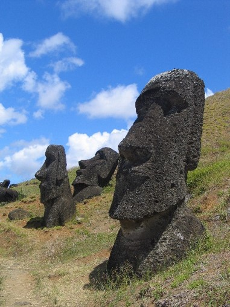

As I look out of my window this morning, I see the landscape I have learned to love here on Rapa Nui, which is known in some places by the name Easter Island. The grasses and shrubs are green, the sky is blue, and the old, now extinct volcanoes rise up in the background.
I am a bit sad knowing that this is my last week on the island. I have finished my field work and will be returning home. Later today, I will take a walk through the hills and say good-bye to the moai that I have been studying for the past nine months. Here is a picture of some of these massive statues.
If you have been following my blog this year, then you know that the people of Rapa Nui carved these moai hundreds of years ago. These impressive moai had been carved in a single quarry on the eastern part of the island. Some of them weighed thousands of kilos, yet the people of Rapa Nui were able to move them to locations far away from the quarry without cranes or any heavy equipment.
For years, archeologists did not know how these massive statues were moved. It remained a mystery until the 1990s, when a team of archeologists and residents of Rapa Nui demonstrated that the moai could have been transported and raised using ropes made from plants and wooden rollers and tracks made from large trees that had once thrived on the island. The mystery of the moai was solved.
Another mystery remained, however. What happened to these plants and large trees that had been used to move the moai? As I said, when I look out of my window, I see grasses and shrubs and a small tree or two, but nothing that could have been used to move these huge statues. It is a fascinating puzzle, one that I will explore in future posts and lectures. Until then, you may wish to investigate the mystery yourself. I suggest you begin with a book called Collapse by Jared Diamond. This review of Collapse is a good place to start .
I also love reading about your experiences on Easter Island, however, I think there is another theory that should be considered. Check out this article: www.sciencenews.com/Polynesian_rats_Rapa_Nui
Hi Professor! I love following your work on Easter Island. I can’t wait to check out Collapse!